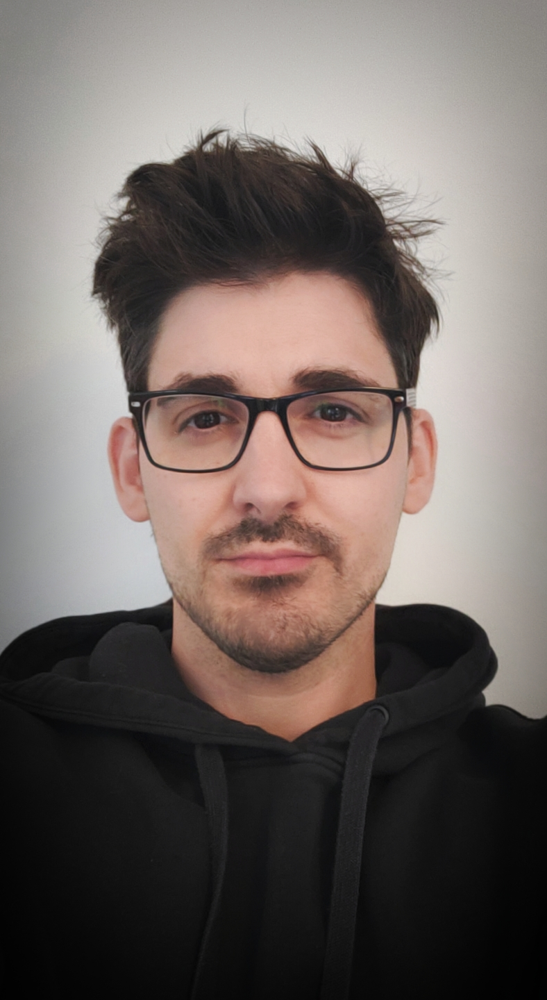

Technicien Systèmes, Réseaux & Cloud en alternance, passionné par la virtualisation et l’automatisation des processus métier. Je privilégie l’efficacité, la fiabilité et la sécurité des infrastructures informatiques. Je ne me considère pas comme un créateur d’applications, mais comme un professionnel orienté solutions, avec un fort intérêt pour l’optimisation des environnements IT.

Silvère Martin
Technicien Systèmes, Réseaux & Cloud en alternance
2
Années d'alternance
3
Environnements IT
2023-2026
Bachelor ESGI
À Propos
Compétences Techniques
- Systèmes & Réseaux : Windows Server 2022, Active Directory (AD), Serveur Web (IIS), SSL/TLS
- Virtualisation : VMware ESXi (création & gestion de VMs, snapshots), gestion de licences flottantes
- Digitalisation (No-Code) : Plateforme TeePee, conception de formulaires, workflows d’automatisation, règles de gestion
- Outils & Bases de Données : Helix ALM, PowerShell (notions), Git, SQL (notions)
Expérience Professionnelle
2023 – Aujourd’hui
Technicien Digitalisation & Systèmes (Alternance)
Cegelec CEM – Grenoble
- Déploiement d’un environnement de test Helix ALM (VM Windows Server 2022 sur ESXi, intégration AD, IIS/HTTPS)
- Rédaction de procédures techniques pour l’équipe
- Pilotage technique de la refonte de la Fiche de Non-Conformité (FNC v2) sur TeePee : simplification du workflow, mise à jour des bases de données, configuration de plus de 60 règles de gestion
- Digitalisation de formulaires pour les services Qualité et Sécurité
- Support & maintenance : préparation de postes, dépannage matériel, support utilisateur (N1/N2)
2006 – 2021
Ouvrier Pâtissier
Divers employeurs
- Respect strict des normes hygiène HACCP : rigueur transférée aux environnements IT
Formation
2023 – 2026
Bachelor Informatique (tronc commun général 1&2, spécialisation Systèmes, Réseaux & Cloud Computing en 3ème année)
ESGI – Grenoble
2022
Titre Professionnel Technicien d’Assistance en Informatique
Onlineformapro
Langues & Compétences Transversales
- Français : Langue maternelle
- Anglais : Niveau A2 (technique, en cours d’amélioration)
- Analyse & Résolution de problèmes : Dépannage serveur IIS, simplification workflow FNC
- Communication & Collaboration : Participation active aux réunions projet, traduction des besoins en solutions techniques
- Rigueur & Méthode : Gestion de l’AD, documentation technique
Centres d’Intérêt
- Randonnée familiale
- Cinéma
- Jeux vidéo